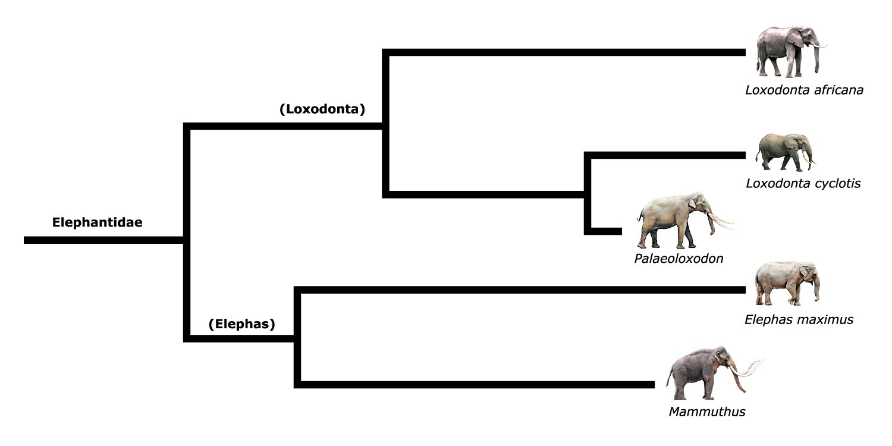
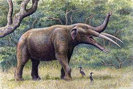

What are Elephants?

Elephants are the largest land mammals on earth, and they are a part of the Animal Kingdom. There are three living species of elephants known, which include:
What Are The Differences?
Although you may think all three Elephant species look the same, there are ways to tell them apart. The African Elephant species are much larger than the Asian Elephants in size. Asian Elephants also have smaller rounded ears compared to the African Elephants, whose look more fan shaped, a little like the continent Africa itself. Not only this but only some male Asian elephants have tusks whereas both female and male African do.
Evolution of Elephants
Elephants have been around for 60 million years, originating from Africa. The Gomphotherium is thought to have been the first discovered descendant of elephants. It was described as a "welded beast" that was widely spread over Africa, South America, and Asia, surviving off a plant-based diet. Elephants were also evolved from Mammoths, who were a species with thick wooly fur living during the Ice Ages 40,000 years ago. Humans were blamed for hunting Mammoths to extinction. Eventually the Asian, African Bush, and African Forest elephants have adapted characteristics from these ancentors.
 Fun Facts